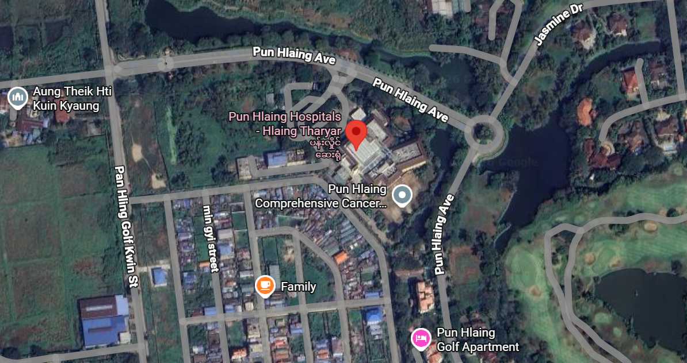

Yangon, Myanmar
Pun Hlaing Siloam Hospital is a modern international-standard hospital that provides specialist healthcare, surgery, maternity care, emergency treatment, and advanced diagnostic services.

Pun Hlaing Estate Avenue, Hlaing Tharyar Township, Yangon, Myanmar
📞 +95 1 684336
✉️ info@punhlainghospitals.com
Official website of Pun Hlaing Siloam Hospital: https://www.punhlainghospitals.com/
Monday - Sunday
Open 24 Hours